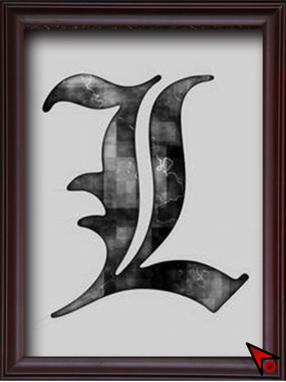
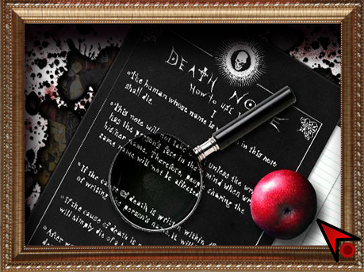

<
<html>
<head>
    <script src="http://lib.sinaapp.com/js/jquery/2.0.2/jquery-2.0.2.min.js">
    </script>
</head>
<body background="static/images/xk_bg.png"
      style="background-repeat:no-repeat ;background-size:100% 100%;background-attachment: fixed;">
<div style="width: 100%" align="center">

    </img>
    </img>

    </img>
    </img>


</div>
<script>

    $(function () {
        var gamefinish=false;
        $("#btn_xk1").click(function () {
            console.log("btn_xk1 click")
            if(gamefinish){ return }
            $("#btn_xk1").attr('src', "static/images/btn_xk1_down.png");
            $.get("http://192.168.1.21:5573/swbj?v=huakuang1click", function (data, status) {
            });
        })
        $("#btn_xk2").click(function () {
            console.log("btn_xk2 click")
            if(gamefinish){ return }
            $("#btn_xk2").attr('src', "static/images/btn_xk2_down.png");
            $.get("http://192.168.1.21:5573/swbj?v=huakuang2click", function (data, status) {
            });
        })
        $("#btn_xk3").click(function () {
            console.log("btn_xk3 click")
            if(gamefinish){ return }
            $("#btn_xk3").attr('src', "static/images/btn_xk3_down.png");
            $.get("http://192.168.1.21:5573/swbj?v=huakuang3click", function (data, status) {
            });
        })
        $("#btn_xk4").click(function () {
            console.log("btn_xk4 click")
            if(gamefinish){ return }
            $("#btn_xk4").attr('src', "static/images/btn_xk4_down.png");
            $.get("http://192.168.1.21:5573/swbj?v=huakuang4click", function (data, status) {
            });
        })


        ws = new WebSocket("ws://192.168.1.21:5573/wsquerygamestatus");
        ws.onopen = function (evt) {
            console.log("conn ok")
        }
        ws.onmessage = function (evt) {
            console.log(evt.data)
            var val = evt.data
            if (val == "gamefinish") {
                gamefinish=true
            }
        }
        ws.onclose = function (evt) {
            console.log("conn close")
            history.go(-1);
        }
    })
</script>
</body>
</html>